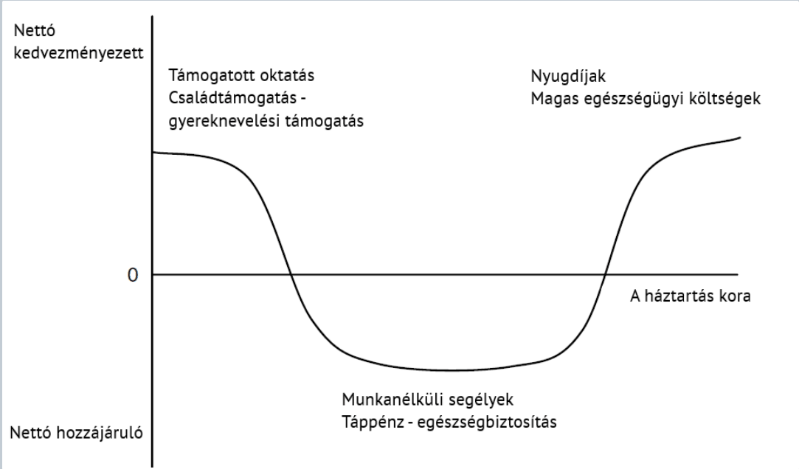

14. fejezet · diák: 206–209
A jóléti állam
Az előző fejezetben az állam válságkezelő szerepéről volt szó. A 20. század másik nagy újítása az, hogy az állam a születéstől a halálig végigkíséri az ember életét: oktatja, gyógyítja, segíti, ha munkanélküli, és nyugdíjat fizet neki. Miért vállalta ezt magára – és miért nem bízzuk mindezt a piacra?
A jóléti állam felfutása; intertemporális átcsoportosítás 206–207. dia
A jóléti állam területei: támogatott oktatás és egészségügy, lakhatás, gyerekgondozás, nyugdíj. Napjainkban ezek együtt a költségvetési kiadások majdnem háromnegyedét teszik ki, a GDP 30–40%-át. A fordulat előtt (a 20. század elején) ez a GDP 5–10%-át sem érte el.
A fejezet kérdése: mire való a jóléti állam, miért az állam végzi, és mi az ára?
Útiterv
Mi a jóléti állam? Három értelmezés
A jóléti állam
- egyes értelmezések szerint a társadalmon belüli jövedelem-átcsoportosítás (redisztribúció) modern intézményi megvalósítója – a gazdagoktól a szegényekhez;
- más értelmezés szerint az emberek, háztartások életciklusán belüli, ún. intertemporális átcsoportosítás megvalósítója – önmagunktól önmagunkhoz, az aktív évekből a gyerek- és időskorba;
- de mindenképpen: közel egyenlő hozzáférést biztosít az emberi tőke képződése szempontjából fontos szolgáltatásokhoz (oktatás, egészségügy, kultúra).
Ugyanez a háztartások szemszögéből
A jóléti nettó egyenleg = a háztartás hozzájárulása a jóléti állam bevételeihez (adók és más hozzájárulások formájában) − a háztartás részesedésének pénzbeli értéke az állam jóléti szolgáltatásaiból és transzfereiből.

Hogyan olvasd a görbét?
- Fiatalon nettó kedvezményezettek vagyunk: támogatott oktatás, családtámogatás, gyereknevelési támogatás.
- Aktív korban nettó hozzájárulók: adót és járulékot fizetünk; ebből a szakaszból kapunk vissza kisebb összegeket (munkanélküli-segély, táppénz, egészségbiztosítás).
- Idősen újra nettó kedvezményezettek: nyugdíj, magas egészségügyi költségek.
aktív kori befizetések → finanszírozzák a gyermek- és időskori ellátást → életünk során „magunknak” csoportosítunk át
A mintazh 14. kérdése: a jóléti állam azért vállal szerepet az életciklusok közötti átcsoportosításban, mert az aktív kori befizetések finanszírozzák a gyermek- és időskori ellátásokat. Nem (csak) a gazdagoktól a szegényekhez csoportosít át.
✏️ Gondold végig – A jóléti állam felfutása
- Miben különbözik a redisztributív és az intertemporális értelmezés?
Mintaválasz
A redisztributív értelmezés szerint a jóléti állam emberek között csoportosít át (gazdagoktól a szegényekhez). Az intertemporális szerint egy ember életén belül: az aktív években befizetett adóból finanszírozza a saját gyermek- és időskori ellátását. A valóságban mindkettő egyszerre zajlik, és mindkettő mellett közel egyenlő hozzáférést biztosít az emberi tőke képződéséhez.
- Miért függ össze a jóléti állam és az emberi tőke?
Mintaválasz
Mert a jóléti állam közel egyenlő hozzáférést biztosít az oktatáshoz, egészségügyhöz és kultúrához. Így a szegényebb családok gyerekei is felhalmozhatnak emberi tőkét, ami az endogén növekedéselmélet szerint a tartós növekedés fő forrása (5. fejezet).
Miért az állam? A jóléti állam kompromisszuma 208–209. dia
Az életcikluson belüli átcsoportosításra a piac is képes: fiatalon hitelt veszünk fel, aktív korban megtakarítunk, idős korban felhasználjuk a megtakarítást. Miért kell mégis az állam?
Piaci kudarc: olyan helyzet, amelyben a piaci megoldás gyengébb, mint ami elérhető lenne. A jóléti szolgáltatásoknál több is van:
- a legszegényebbeknél a piac nem működik – akinek nincs jövedelme, az nem tud megtakarítani vagy hitelt felvenni; itt a szolidaritás a válasz;
- pozitív externális hatások (oktatás, egészségügy): a haszon másoknak is jut (egy oltás a környezetet is védi, egy iskolázott ember a munkatársait is termelékenyebbé teszi) – ez koordinációs probléma, amelyet az állami szabály könnyebben megold;
- negatív diszkrimináció a rosszabb egészségi állapotúakkal szemben: piaci biztosításban aránytalanul nagy terhet kellene vállalniuk;
- nem időkonzisztens preferenciák: a rövid távú előnyöket előnyben részesítjük a hosszú távúakkal szemben – nem takarékoskodunk kellő mértékben (ezért kötelező a nyugdíjjárulék).
Externália: egy tevékenység olyan hatása másokra, amelyet a piaci ár nem tartalmaz. Pozitív externáliánál (oktatás, oltás) a piac kevesebbet állít elő a társadalmilag kívánatosnál, mert az egyén csak a saját hasznát mérlegeli.
Miért kell egyáltalán jóléti kiadás?
A Ruggie (1982) – Rodrik (1998) hipotézis:
- a nyitottá váló világgazdaságban a ciklikus ingadozások elkerülhetetlenek;
- az ingadozások az alacsonyabb jövedelműeket súlyosabban érintik;
- a jóléti kiadások ezt ellensúlyozzák – így lehet a veszteseket is megtartani a szabadkereskedelem hívei között.
nyitottság → ingadozás, vesztesek → jóléti kompenzáció → a nyitottság politikailag fenntartható marad
Rodrik empirikusan is kimutatta, hogy a nyitottabb gazdaságoknak nagyobb az állami szektora. A hipotézis összeköti a jóléti államot a kereskedelempolitikával: a kereskedelem haszna egyenlőtlenül oszlik meg (2. fejezet), és ha a vesztesek nem kapnak kompenzációt, a protekcionizmust fogják támogatni.
A jóléti állam kompromisszuma
- A jóléti állam egyfajta kötelező biztosítás bizonyos élethelyzetekre és életkorokra.
- Kezelhet piaci kudarcokat, externáliákat és szolidaritási célokat.
- A hozzáférés, az ösztönzők, a finanszírozhatóság és a politikai legitimitás között kompromisszumok vannak.
- A kérdés nem egyszerűen „állam vagy piac?”, hanem az intézményi feladatmegosztás minősége.
Néhány példa a kompromisszumokra: a bőkezű munkanélküli-segély védi a vesztest, de csökkentheti a munkakeresés ösztönzőjét; az elöregedés (3. fejezet) a nyugdíjrendszer finanszírozhatóságát fenyegeti; és ha a középosztály nem érzi, hogy kap is valamit, a jóléti állam elveszíti politikai legitimitását.
✏️ Gondold végig – Miért az állam?
- A piac is képes az életcikluson belüli átcsoportosításra (hitel, megtakarítás). Miért vállalja mégis az állam?
Mintaválasz
Piaci kudarcok miatt: a legszegényebbek nem tudnak hitelt felvenni vagy megtakarítani (szolidaritás kell); az oktatás és az egészségügy pozitív externáliái miatt a piac kevesebbet nyújtana a kívánatosnál; a piaci biztosítás diszkriminálná a betegeket; és a rövidlátás (nem időkonzisztens preferenciák) miatt kevesebbet takarékoskodnánk.
- Hogyan kapcsolódik a jóléti állam a szabadkereskedelemhez a Ruggie–Rodrik hipotézis szerint?
Mintaválasz
A nyitott gazdaságban elkerülhetetlenek az ingadozások, és ezek az alacsony jövedelműeket sújtják leginkább. A jóléti kiadások kompenzálják a veszteseket, így ők sem fordulnak a szabadkereskedelem ellen – a nyitottság politikailag fenntartható marad.
- Milyen kompromisszumokkal jár a jóléti állam?
Mintaválasz
A hozzáférés (mindenki kapjon ellátást), az ösztönzők (ne csökkenjen a munkára való hajlandóság), a finanszírozhatóság (az elöregedés és a költségek miatt) és a politikai legitimitás (a befizetők támogassák) között. Ezért nem az a kérdés, hogy állam vagy piac, hanem hogy milyen jó a feladatmegosztás közöttük.
Összefoglalás
- A jóléti kiadások (oktatás, egészségügy, lakhatás, gyerekgondozás, nyugdíj) a GDP 5–10%-áról 30–40%-ára nőttek.
- A jóléti állam értelmezhető redisztribúcióként és intertemporális átcsoportosításként is; mindenképpen közel egyenlő hozzáférést ad az emberi tőke képzéséhez.
- Az életciklus során fiatalon és idősen nettó kedvezményezettek, aktív korban nettó hozzájárulók vagyunk.
- Az állami szerepet piaci kudarcok indokolják: szegénység, externáliák, diszkrimináció, rövidlátás.
- Ruggie–Rodrik: a jóléti kiadások teszik politikailag fenntarthatóvá a nyitottságot.
- A jóléti állam kompromisszum – a kérdés az intézményi feladatmegosztás minősége.
Válasz a fejezet kérdésére: a jóléti állam kötelező biztosítás az élet kockázatos szakaszaira, és egyenlő esélyt ad az emberi tőke felhalmozására. Azért az állam végzi, mert a piac ezen a területen több ponton is kudarcot vall, és mert a nyitott gazdaság veszteseit kompenzálni kell. Az ára a magas adóteher, a gyengülő ösztönzők és a finanszírozhatóság kérdése – ezért folyamatos kompromisszum.
Esszéhez: ha ezt látod → ezt használd
| Ha az esetben ez áll… | …akkor ezt a fogalmat / mechanizmust használd |
|---|---|
| Ingyenes oktatás, egészségügy, családtámogatás | egyenlő hozzáférés az emberi tőkéhez; pozitív externália (→, →) |
| Kötelező nyugdíjjárulék | intertemporális átcsoportosítás; nem időkonzisztens preferenciák (→) |
| Nyitott ország nagy állami szektorral | Ruggie–Rodrik hipotézis (→) |
| A piac nem biztosítja a betegeket, szegényeket | piaci kudarc, szolidaritás (→) |
| Elöregedő társadalom, fenntarthatatlan nyugdíjrendszer | a jóléti állam kompromisszuma: finanszírozhatóság (→) |
Kapcsolódások
- A kereskedelem haszna egyenlőtlenül oszlik meg (2. fejezet).
- Elöregedés (3. fejezet).
- Emberi tőke, endogén növekedés (5. fejezet).
- Jogkiterjesztés, GI Bill (9. fejezet).
- Kereskedelempolitika (11. fejezet); Keynes és a porosz iskola (13. fejezet).
- Szintézis (15. fejezet): a jó intézmények méltányos elosztást és azonos indulóesélyeket biztosítanak.